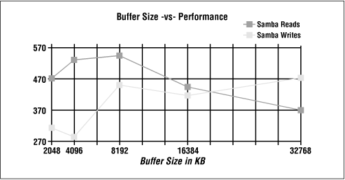

Using Samba
Robert Eckstein, David Collier-Brown, Peter Kelly1st Edition November 1999
1-56592-449-5, Order Number: 4495
416 pages, $34.95
|
|
|
|
|
Using SambaRobert Eckstein, David Collier-Brown, Peter Kelly1st Edition November 1999 1-56592-449-5, Order Number: 4495 416 pages, $34.95 |
B.2 Samba Tuning
That being said, let's discuss how you can take an already fast networking package and make it even faster.
B.2.1 Benchmarking
Benchmarking is an arcane and somewhat black art, but the level of expertise needed for simple performance tuning is fairly low. Since the Samba server's goal in life is to transfer files, we will examine only throughput, not response time to particular events, under the benchmarking microscope. After all, it's relatively easy to measure file transfer speed, and Samba doesn't suffer too badly from response-time problems that would require more sophisticated techniques.
Our basic strategy for this work will be:
After establishing a baseline using this method, we can adjust a single parameter and do the measurements all over again. An empty table for your tests is provided at the end of this chapter.
B.2.2 Things to Tweak
There are literally thousands of Samba setting combinations that you can use in search of that perfect server. Those of us with lives outside of system administration, however, can narrow down the number of options to those listed in this section, which are the most likely to affect overall throughput. They are presented roughly in order of impact.
B.2.2.1 Log level
This is an obvious one. Increasing the logging level (
loglevelordebuglevelconfiguration options) is a good way to debug a problem, unless you happen to be searching for a performance problem! As mentioned in Chapter 4, Disk Shares , Samba produces a ton of debugging messages at level 3 and above, and writing them to disk or syslog is a slow operation. In our smbclient/ftp tests, raising the log level from 0 to 3 cut the untunedgetspeedfrom 645.3 to 622.2KB/s, or roughly 5 percent. Higher log levels were even worse.B.2.2.2 Socket options
The next thing to look at are the
socketoptionsconfiguration options. These are really host system tuning options, but they're set on a per-connection basis, and can be reset by Samba on the sockets it employs by addingsocketoptions=optionto the[global]section of your smb.conf file. Not all of these options are supported by all vendors; check your vendor's manual pages on setsockopt (1) or socket (5) for details.The main options are:
TCP_NODELAYHave the server send as many packets as necessary to keep delay low. This is used on telnet connections to give good response time, and is used - somewhat counter-intuitively - to get good speed even when doing small requests or when acknowledgments are delayed (as seems to occur with Microsoft TCP/IP). This is worth a 30-50 percent speedup by itself. Incidentally, in Samba 2.0.4,
socketoptions=TCP_NODELAYbecame the default value for that option.IPTOS_LOWDELAYThis is another option that trades off throughput for lower delay, but which affects routers and other systems, not the server. All the IPTOS options are new; they're not supported by all operating systems and routers. If they are supported, set
IPTOS_LOWDELAYwhenever you setTCP_NODELAY.SO_SNDBUFandSO_RCVBUFThe send and receive buffers can often be the reset to a value higher than that of the operating system. This yields a marginal increase of speed (until it reaches a point of diminishing returns).
SO_KEEPALIVEThis initiates a periodic (four-hour) check to see if the client has disappeared. Expired connections are addressed somewhat better with Samba's
keepaliveanddeadtimeoptions. All three eventually arrange to close dead connections, returning unused memory and process-table entries to the operating system.There are several other socket options you might look at, (e.g.,
SO_SNDLOWAT), but they vary in availability from vendor to vendor. You probably want to look at TCP/IP Illustrated if you're interested in exploring more of these options for performance tuning with Samba.B.2.2.3 read raw and write raw
These are important performance configuration options; they enable Samba to use large reads and writes to the network, of up to 64KB in a single SMB request. They also require the largest SMB packet structures,
SMBreadrawandSMBwriteraw, from which the options take their names. Note that this is not the same as a Unix raw read. This Unix term usually refers to reading disks without using the files system, quite a different sense from the one described here for Samba.In the past, some client programs failed if you tried to use
readraw. As far as we know, no client suffers from this problem any more. Read and write raw default toyes, and should be left on unless you find you have one of the buggy clients.B.2.2.4 Opportunistic locking
Opportunistic locks, or oplocks, allow clients to cache files locally, improving performance on the order of 30 percent. This option is now enabled by default. For read-only files, the
fakeoplocksprovides the same functionality without actually doing any caching. If you have files that cannot be cached, oplocks can be turned off.Database files should never be cached, nor should any files that are updated both on the server and the client and whose changes must be immediately visible. For these files, the
vetooplockfilesoption allows you to specify a list of individual files or a pattern containing wildcards to avoid caching. oplocks can be turned off on a share-by-share basis if you have large groups of files you don't want cached on clients. See Chapter 5, Browsing and Advanced Disk Shares , for more information on opportunistic locks.B.2.2.5 IP packet size (MTU)
Networks generally set a limit to the size of an individual transmission or packet This is called the Maximum Segment Size, or if the packet header size is included, the Maximum Transport Unit (MTU). This MTU is not set by Samba, but Samba needs to use a
maxxmit(write size) bigger than the MTU, or throughput will be reduced. This is discussed in further detail in the following note. The MTU is normally preset to 1500 bytes on an Ethernet and 4098 bytes on FDDI. In general, having it too low cuts throughput, and having it too high causes a sudden performance dropoff due to fragmentation and retransmissions.If you are communicating over a router, some systems will assume the router is a serial link (e.g., a T1) and set the MTU to more or less 536 bytes. Windows 95 makes this mistake, which causes nearby clients to perform well, but clients on the other side of the router to be noticeably slower. If the client makes the opposite error and uses a large MTU on a link which demands a small one, the packets will be broken up into fragments. This slows transfers slightly, and any networking errors will cause multiple fragments to be retransmitted, which slows Samba significantly. Fortunately, you can modify the Windows MTU size to prevent either error. To understand this in more detail, see "The Windows 95 Networking Frequently Asked Questions (FAQ)" at http://www.stanford.edu/~llurch/win95netbugs/faq.html, which explains how to override the Windows MTU and Window Size.
B.2.2.6 The TCP receive window
TCP/IP works by breaking down data into small packets that can be transmitted from one machine to another. When each packet is transmitted, it contains a checksum that allows the receiver to check the packet data for potential errors in transmission. Theoretically, when a packet is received and verified, an acknowledgment packet should be sent back to the sender that essentially says, "Everything arrived intact: please continue."
In order to keep things moving, however, TCP accepts a range (window) of packets that allows a sender to keep transmitting without having to wait for an acknowledgment of every single packet. (It can then bundle a group of acknowledgments and transmit them back to the sender at the same time.) In other words, this receive window is the number of bytes that the sender can transmit before it has to stop and wait for a receiver's acknowledgment. Like the MTU, it is automatically set based on the type of connection. Having the window too small causes a lot of unnecessary waiting for acknowledgment messages. Various operating systems set moderate buffer sizes on a per-socket basis to keep one program from hogging all the memory.
The buffer sizes are assigned in bytes, such as
SO_SNDBUF=8192in thesocketoptionsline. Thus, an examplesocketoptionsconfiguration option is:socketoptions=SO_SNDBUF=8192Normally, one tries to set these socket options higher than the default: 4098 in SunOS 4.1.3 and SVR4, and 8192-16384 in AIX, Solaris, and BSD. 16384 has been suggested as a good starting point: in a non-Samba test mentioned in Stevens' book, it yielded a 40 percent improvement. You'll need to experiment, because performance will fall off again if you set the sizes too high. This is illustrated in Figure B.1, a test done on a particular Linux system.
Figure B.1: SO_SNDBUF size and performance
Setting the socket options
O_SNDBUFandSO_RCVBUFto less than the default is inadvisable. Setting them higher improves performance, up to a network-specific limit. However, once you exceed that limit, performance will abruptly level off.B.2.2.7 max xmit
In Samba, the option that is directly related with the MTU and window size is
maxxmit. This option sets the largest block of data Samba will try to write at any one time. It's sometimes known as the write size, although that is not the name of the Samba configuration option.Because the percentage of each block required for overhead falls as the blocks get larger, max xmit is conventionally set as large as possible. It defaults to the protocol's upper limit, which is 64 kilobytes. The smallest value that doesn't cause significant slowdowns is 2048. If it is set low enough, it will limit the largest packet size that Samba will be able to negotiate. This can be used to simulate a small MTU if you need to test an unreliable network connection. However, such a test should not be used in production for reducing the effective MTU.
B.2.2.8 read size
If
maxxmitis commonly called the write size, you'd expectreadsizeto be the maximum amount of data that Samba would want to read from the client via the network. Actually, it's not. In fact, it's an option to trigger write ahead. This means that if Samba gets behind reading from the disk and writing to the network (or vice versa) by the specified amount, it will start overlapping network writes with disk reads (or vice versa).The read size doesn't have a big performance effect on Unix, unless you set its value quite small. At that point, it causes a detectable slowdown. For this reason, it defaults to 2048 and can't be set lower than 1024.
B.2.2.9 read prediction
Besides being counterintuitive, this option is also obsolete. It enables Samba to read ahead on files opened read only by the clients. The option is disabled in Samba 2.0 (and late 1.9) Because it interferes with opportunistic locking.
B.2.3 Other Samba Options
The following Samba options will affect performance if they're set incorrectly, much like the debug level. They're mentioned here so you will know what to look out for:
hide filesProviding a pattern to identify files hidden by the Windows client
hidefileswill result in any file matching the pattern being passed to the client with the DOS hidden attribute set. It requires a pattern match per file when listing directories, and slows the server noticeably.lpq cache timeIf your
lpq(printer queue contents) command takes a long time to complete, you should increaselpqcachetimeto a value higher than the actual time required forlpqto execute, so as to keep Samba from starting a new query when one's already running. The default is 10 seconds, which is reasonable.strict lockingSetting the
strictlockingoption causes Samba to check for locks on every access, not just when asked to by the client. The option is primarily a bug-avoidance feature, and can prevent ill-behaved DOS and Windows applications from corrupting shared files. However, it is slow and should typically be avoided.strict syncSetting
strictsyncwill cause Samba to write each packet to disk and wait for the write to complete whenever the client sets the sync bit in a packet. Windows 98 Explorer sets the bit in all packets transmitted, so if you turn this on, anyone with Windows 98 will think Samba servers are horribly slow.sync alwaysSetting
syncalwayscauses Samba to flush every write to disk. This is good if your server crashes constantly, but the performance costs are immense. SMB servers normally use oplocks and automatic reconnection to avoid the ill effects of crashes, so setting this option is not normally necessary.wide linksTurning off
widelinksprevents Samba from following symbolic links in one file share to files that are not in the share. It is turned on by default, since following links in Unix is not a security problem. Turning it off requires extra processing on every file open. If you do turn off wide links, be sure to turn ongetwdcacheto cache some of the required data.There is also a
followsymlinksoption that can be turned off to prevent following any symbolic links at all. However, this option does not pose a performance problem.getwd cacheThis option caches the path to the current directory, avoiding long tree-walks to discover it. It's a nice performance improvement on a printer server or if you've turned off
widelinks.B.2.4 Our Recommendations
Here's an smb.conf file that incorporates the recommended performance enhancements so far. Comments have been added on the right side.
[global] log level = 1 # Default is 0 socket options = TCP_NODELAY IPTOS_LOWDELAY read raw = yes # Default write raw = yes # Default oplocks = yes # Default max xmit = 65535 # Default dead time = 15 # Default is 0 getwd cache = yes lpq cache = 30 [okplace] veto oplock files = this/that/theotherfile [badplace] oplocks = no
 |
 |
 |
| B.1 A Simple Benchmark |
 | B.3 Sizing Samba Servers |
Back to: Using Samba
© 1999, O'Reilly & Associates, Inc.